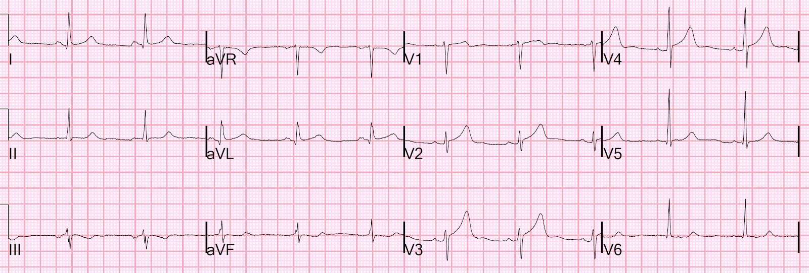
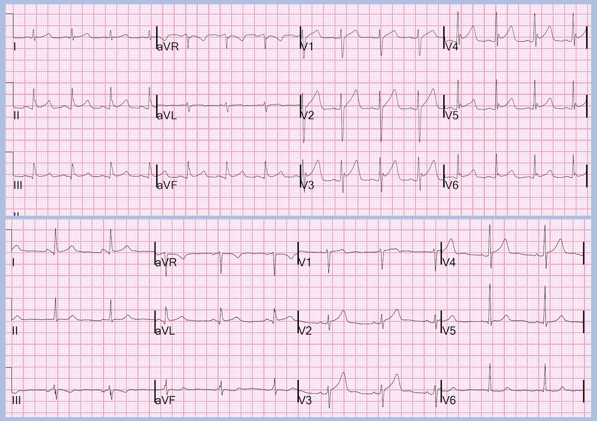
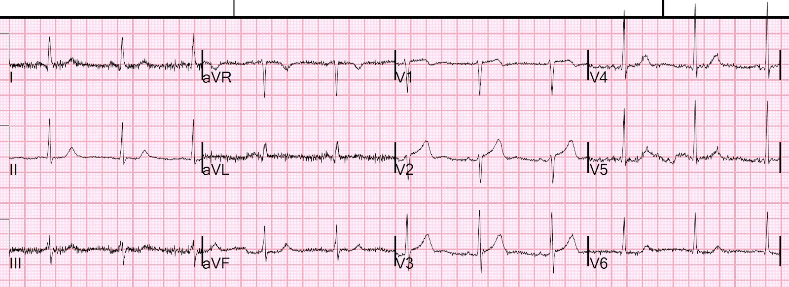
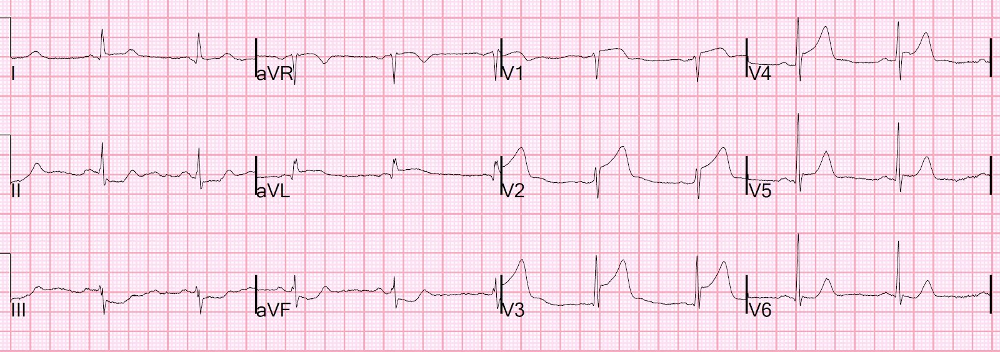
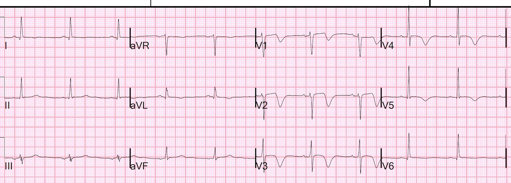
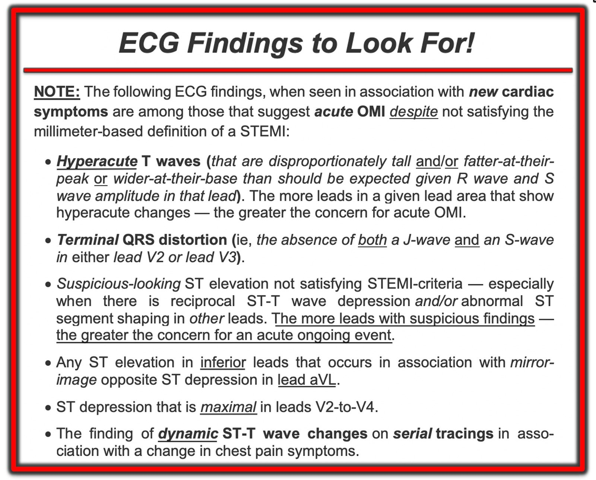
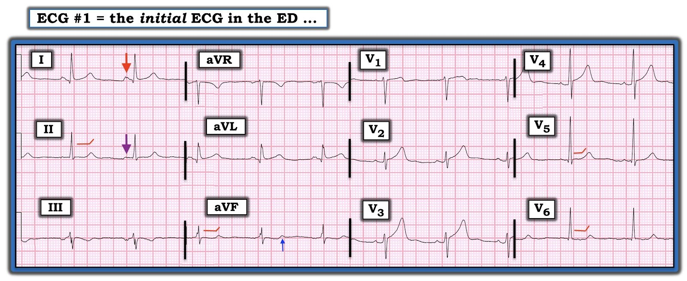

22/02/2022 — Nam giới 40 mấy tuổi bị tăng huyết áp rất cao và đau ngực dữ dội cấp tính
Bản dịch tiếng Việt của bài "A 40-something man with very elevated blood pressure and acute severe chest pain" – Dr. Smith’s ECG Blog. Giữ nguyên toàn bộ 8 hình ảnh của bản gốc.
Bệnh nhân nam 40 mấy tuổi này, tiền sử bệnh duy nhất là tăng huyết áp, đến viện vì đau ngực cấp.
Điện tâm đồ 12 chuyển đạo được ghi ngay trong vòng vài phút sau khi đến khu phân loại (triage):


Bạn nghĩ gì?
ST chênh lên (STE) ở V2-V4 là do ST chênh lên biến thể bình thường (cái gọi là “tái cực sớm”) hay STE là do tắc LAD (OMI)?
Vị bác sĩ khu phân loại rất tinh ý đã nhận ra ngay tắc LAD (nhồi máu cơ tim do tắc LAD hay OMI). Tại sao?
Có một ít ST chênh lên, nhưng không đạt “tiêu chuẩn STEMI”. Nhưng có sóng T tối cấp (rộng và “đầy đặn” so với QRS). Cũng có sóng T dạng xuống-lên (down-up) ở III và aVF, đây là một dấu hiệu khá đặc hiệu của OMI do LAD.
Hơn nữa, có một chút ST chênh xuống ở chuyển đạo V6; STE biến thể bình thường không bao giờ có ST chênh xuống ở bất kỳ chuyển đạo nào ngoại trừ aVR.
Ở nam giới trên 40 tuổi, Định nghĩa toàn cầu về nhồi máu cơ tim chấp nhận là bình thường mức STE tới 2.0 mm ở V2 và V3 và tới 1 mm ở mọi chuyển đạo khác (với nữ là 1.5 mm, và với nam dưới 40 tuổi là 2.5 mm). Không có 2 chuyển đạo liên tiếp nào đạt các tiêu chuẩn này. Nhưng như chúng tôi vẫn luôn nhấn mạnh, ＜50% trường hợp nhồi máu cơ tim do tắc cấp đạt các tiêu chuẩn này.
David Marti và cs. thấy rằng 18% trường hợp tắc LAD không có chuyển đạo nào có STE trên 1 mm. Incidence, angiographic features and outcomes of patients presenting with subtle ST-elevation myocardial infarction (Tỷ lệ mắc, đặc điểm chụp mạch và kết cục của bệnh nhân nhồi máu cơ tim ST chênh lên kín đáo). Và còn nhiều công bố tương tự khác.
Nếu áp dụng công thức phân biệt tắc LAD với STE biến thể bình thường, và dùng QTc 436 ms (máy đo), biên độ sóng R ở V4 = 14 mm, QRS ở V2 = 7 mm, và STE tại 60 ms sau điểm J = 2.5 mm, ta được 20.5, một giá trị rất cao và khẳng định tắc LAD.
____________________
2 ngày trước tôi đã đăng một điện tâm đồ có ST chênh lên bình thường có thể giả OMI.
Đây là điện tâm đồ hôm nay, đặt bên dưới điện tâm đồ bình thường đó:


Bình thường ở trên; OMI do LAD ở dưới
Trong cả hai trường hợp, không cần đo gì cả, một người đọc giàu kinh nghiệm biết ngay rằng điện tâm đồ phía trên là bình thường và điện tâm đồ phía dưới là tắc LAD.
Hãy học cách nhận ra điện tâm đồ giống như cách bạn nhận ra khuôn mặt.
______________________________
Phòng thông tim (cath lab) được kích hoạt cấp cứu.
Trong lúc đó, cơn đau của bệnh nhân giảm từ “11/10” xuống “5/10” và một điện tâm đồ khác được ghi lúc 14 phút sau điện tâm đồ đầu tiên, dùng đúng những miếng dán điện cực như cũ:


Bạn nghĩ gì?
Điện tâm đồ này đã bình thường hóa (do tái tưới máu một phần) Sự bình thường hóa như vậy càng chứng minh điện tâm đồ đầu tiên có giá trị chẩn đoán!
Điện tâm đồ này cho thấy sóng T tối cấp đã hồi phục và phần lớn STE đã hồi phục. Lưu ý rằng, trong điện tâm đồ này, sóng T ở V2 lớn hơn so với ở điện tâm đồ đầu tiên!! Tuy nhiên, nó NHỎ HƠN khi xét tỷ lệ so với kích thước QRS, và TỶ LỆ MỚI LÀ ĐIỀU DUY NHẤT QUAN TRỌNG. Ở V3 và V4, sóng T giờ nhỏ hơn về giá trị tuyệt đối và NHỎ HƠN NHIỀU khi xét tỷ lệ so với QRS. Vậy điều này hàm ý đã có tái tưới máu tự phát.
Lượng STE nhỏ ở aVL và I cũng đã hồi phục.
Lưu ý rằng điện thế QRS đã tăng lên. Tắc mạch và tái tưới máu không chỉ ảnh hưởng tới ST-T, mà cả QRS.
Ca bệnh tiếp diễn
Vài phút sau, trong khi chờ kíp thông tim, bệnh nhân lại đau dữ dội và một điện tâm đồ khác được ghi lúc 32 phút sau điện tâm đồ đầu tiên.


STEMI trước bên rõ ràng [OMI STEMI dương tính (STEMI (+) OMI)]
Tắc LAD ở đoạn gần trước nhánh chéo thứ nhất – chúng ta biết vị trí này nhờ STE ở I, aVL và ST chênh xuống soi gương ở các chuyển đạo dưới.
Lưu ý sóng S ở V3 gần như đã biến mất.
Huyết áp của bệnh nhân rất cao (170/115) nên anh được cho nhiều liều nitroglycerin (NTG) ngậm dưới lưỡi và cũng được bắt đầu truyền nitroglycerin tĩnh mạch, chỉnh liều tăng dần tới 150 mcg/phút cho đến khi huyết áp còn 150/90. Lẽ ra chúng tôi nên cho anh dùng metoprolol, vì thuốc này được chỉ định trong STEMI thành trước có thời gian triệu chứng dưới 6 giờ, đang chuyển tới phòng thông tim, với huyết áp tâm thu ＞120 mmHg (giảm tử vong trong các thử nghiệm ngẫu nhiên). Xem phần bàn luận về chẹn beta trong STEMI thành trước ở bài này. (Chúng tôi chỉ nghĩ tới điều đó sau khi phòng thông tim đã sẵn sàng.)
Bệnh nhân được đưa vào phòng thông tim và phát hiện tắc 99% đoạn gần LAD do huyết khối với dòng chảy TIMI-1 (dòng chảy giảm nhiều).
Chúng tôi không biết liệu vào thời điểm ghi điện tâm đồ có còn dòng chảy nào hay không (TIMI-0 so với TIMI-1). [Chúng tôi biết rằng chỉ 64% STEMI thực sự có dòng chảy TIMI-0; 36% có dòng chảy TIMI 1, 2 hoặc 3. Đó là vì huyết khối mạch vành có tính động, và thay đổi giữa thời điểm ghi điện tâm đồ và thời điểm chụp mạch vành.]
LAD được tái thông và đặt stent.
Ngày hôm sau:


Sóng T tái tưới máu, giống hệt sóng Wellens
Troponin I độ nhạy cao ban đầu là 236 ng/L. Không đo thêm troponin lần nào nữa.
Siêu âm tim không thấy rối loạn vận động thành. Nhận diện nhanh và kích hoạt phòng thông tim giúp cứu vớt cơ tim!!
Bệnh nhân được xuất viện 48 giờ sau khi nhập viện.

===================================
BÌNH LUẬN CỦA TÔI, bởi KEN GRAUER, MD (21/2/2022):
===================================
Ca hôm nay là một ca tuyệt vời để mài giũa kỹ năng nhận diện OMI cấp khi không đạt tiêu chuẩn milimét của STEMI cấp. Như Dr. Smith đã nêu — Ở bệnh nhân đau ngực mới khởi phát — điện tâm đồ ban đầu trong ca hôm nay (mà tôi trình bày lại bên dưới ở Hình 2) — có giá trị chẩn đoán tắc LAD cấp.
- Để ôn tập — tôi muốn tóm tắt những dấu hiệu điện tâm đồ mà khi gặp cùng với triệu chứng tim mới xuất hiện — cần ngay lập tức gợi ý OMI cấp bất kể có đạt tiêu chuẩn STEMI dựa trên milimét hay không (Hình 1).


TẠI SAO điện tâm đồ #1 có giá trị chẩn đoán OMI cấp?
Tôi tập trung bình luận vào một số dấu hiệu trên điện tâm đồ ban đầu (Hình 2). Những dấu hiệu này làm nổi bật gạch đầu dòng thứ 1 và thứ 3 trong Bảng ở Hình 1 phía trên.
- Như Dr. Smith đã nêu — có sóng T tối cấp. Nhận thấy rằng thuật ngữ này tùy thuộc vào cách hiểu của từng người — tôi định nghĩa sóng T “tối cấp” là sóng T cao không tương xứng và/hoặc đầy hơn ở đỉnh hoặc rộng hơn ở đáy so với mức đáng lẽ phải có, xét theo biên độ sóng R và sóng S ở chuyển đạo đang xem. Nói đơn giản — sóng T tối cấp quá “đầy đặn”, theo nghĩa là chúng chiếm nhiều diện tích dưới sóng T hơn mức dự kiến.
- Mặc dù có một ít ST chênh lên ở các chuyển đạo V2, V3 và V4 — không nhất thiết phải có ST chênh lên thì sóng T mới là “tối cấp”.
- Như đã nhấn mạnh trong Bảng ở Hình 1 — càng nhiều chuyển đạo có dấu hiệu đáng ngờ — càng đáng lo ngại về một biến cố cấp đang diễn ra. Tôi bắt đầu với 1 hoặc 2 chuyển đạo chắc chắn “quá đầy đặn” (hypervoluminous) — mà trong trường hợp Hình 2, là các chuyển đạo V2 và V3. Không chỉ sóng T ở chuyển đạo V2 vượt cao hẳn so với sóng R nhỏ ở chuyển đạo này — mà đỉnh sóng T này còn “đầy” — và đáy sóng T này chiếm phần lớn khoảng QT.
- Tương tự — sóng T ở chuyển đạo V3 cao hơn nhiều, với đáy rộng hơn nhiều so với mức dự kiến xét theo kích thước phức bộ QRS ở chuyển đạo này.
- Theo khái niệm “chuyển đạo lân cận” — sóng T ở chuyển đạo V4 cũng (theo định nghĩa của tôi) là tối cấp. Có thể bạn sẽ không nghĩ vậy nếu chỉ nhìn riêng sóng T ở chuyển đạo V4 — nhưng vì sóng T ở các chuyển đạo V2 và V3 chắc chắn bất thường — tôi cho rằng sóng T ở chuyển đạo V4 rõ ràng “đầy đặn” hơn mức tôi dự kiến.
Nhưng còn có các chuyển đạo khác trong Hình 2 mà tôi đánh giá là chắc chắn bất thường!
- Đoạn ST ở các chuyển đạo ngực bên V5 và V6 bị dẹt (các đường ĐỎ thẳng ở những chuyển đạo này) — và — các đoạn ST này ở V5, V6 đi kèm sóng T biên độ tương đối thấp (tức là, Bình thường, sóng T ở các chuyển đạo ngực bên này không nhỏ hơn nhiều đến vậy so với sóng T ở các chuyển đạo trước).
- ST-T của 2 nhát bóp ở chuyển đạo V1 trông khác nhau. NẾU đoạn ST “đúng” là của nhát thứ 2 ở chuyển đạo V1 — thì ST chênh lên kín đáo kèm đoạn ST dạng vòm (coving) này không phải là hình ảnh bình thường ở chuyển đạo V1.
- Ở các chuyển đạo chi — có những bất thường kín đáo-nhưng-có-thật ở 5 trong 6 chuyển đạo. Ngoài sóng T “xuống-lên” mà Dr. Smith đã chỉ ra, vốn không nên có (mũi tên XANH ở chuyển đạo aVF) — đoạn ST ở các chuyển đạo II và aVF thẳng đuỗn một cách bất thường (các đường ĐỎ ở những chuyển đạo này). Trong bối cảnh sóng T tối cấp rõ ràng ở các chuyển đạo ngực — tôi coi ST chênh lên kín đáo-nhưng-có-thật kèm sóng T đáy rộng ở các chuyển đạo I và aVL là gợi ý thay đổi tối cấp. Trong bối cảnh đó — các sóng q nhỏ ở những chuyển đạo bên cao này có thể có hoặc không có ý nghĩa.
- Cuối cùng — tôi cho rằng sóng T đảo ngược ở chuyển đạo III có lẽ là một thay đổi soi gương. Xin nhấn mạnh: Sóng T ở chuyển đạo III bình thường có thể âm, nhất là khi phức bộ QRS chủ yếu âm ở chuyển đạo này. Nhưng, vì có bất thường rõ ở 2 chuyển đạo dưới còn lại (các chuyển đạo II và aVF) — tôi diễn giải sóng T đảo ngược ở chuyển đạo III này là thay đổi soi gương (reciprocal) ngược chiều, đối xứng như hình trong gương (mirror-image), với các bất thường ST-T kín đáo thấy ở chuyển đạo aVL
ĐIỀU CỐT LÕI:
- Ở người đàn ông 40 mấy tuổi bị đau ngực mới khởi phát này — sóng T tối cấp rõ ràng (kèm một ít ST chênh lên) thấy ở các chuyển đạo V2 và V3 — cùng các bất thường ST-T kín đáo-nhưng-có-thật ở không ít hơn 10 (nếu không nói là 11) trong 12 chuyển đạo. Như vị bác sĩ khu phân loại tinh ý đã nhận ra — phải coi là tắc LAD cấp cho đến khi chứng minh được điều ngược lại!


Điểm CỘNG:
BẠN có để ý rằng nhịp trong điện tâm đồ #1 không phải nhịp xoang không?
- Tại sao tôi nói vậy?
TRẢ LỜI:
Chúng ta nhận ra nhịp xoang nhờ có sóng P dương ở chuyển đạo II. Lý do của dấu hiệu này là đường đi của xung điện khi nó di chuyển từ nút xoang (SA) tới nút AV — sẽ hướng rất gần +60 độ trên mặt phẳng trán khi nhịp là nhịp xoang. Đó là lý do bình thường sóng P phải cao nhất ở chuyển đạo II (so với biên độ sóng P ở các chuyển đạo I và III).
- Hãy nghi ngờ hoặc một nhịp không phải xoang hoặc đảo điện cực LA-LL bất cứ khi nào sóng P dương rõ và lớn hơn ở chuyển đạo I so với chuyển đạo II (như trường hợp ở điện tâm đồ #1).
- Theo bài ngày 28 tháng Tám năm 2020 trên Dr. Smith’s ECG Blog (Vui lòng xem Phần bổ sung tôi viết ở cuối trang của bài đó) — trong số các thay đổi xảy ra khi đảo điện cực LA-LL có: i) Chuyển đạo I và II đổi chỗ cho nhau (đó là lý do sóng P xoang sẽ trông lớn hơn ở chuyển đạo I với kiểu đảo điện cực này); ii) Chuyển đạo III bị đảo ngược; và, iii) Chuyển đạo aVL và aVF đổi chỗ cho nhau.
- Vì điện tâm đồ ghi lại trong lúc đau ngực tái phát ở ca hôm nay cho thấy sóng P dương trông bình thường (lớn hơn nhiều so với sóng P ở chuyển đạo I vào thời điểm đó) — nhưng không có đảo ngược chuyển đạo III — chúng ta có thể kết luận rằng lý do sóng P nhỏ ở chuyển đạo II của điện tâm đồ #1 không phải do đảo điện cực LA-LL — mà đơn giản chỉ phản ánh một nhịp nhĩ thấp.
- Xin nhấn mạnh — Nhịp nhĩ thấp thường không phải là nhịp bệnh lý, và trong ca hôm nay, việc có nhịp nhĩ thấp không ảnh hưởng gì đến điều trị hay diễn biến lâm sàng của bệnh nhân này. Nhưng sai lầm thường gặp nhất mà tôi thấy ngay cả những người đọc giàu kinh nghiệm mắc phải khi đọc rối loạn nhịp — là không dành ra 3-5 giây cần thiết để “con mắt được đào tạo” của bạn nhìn phía trước mỗi nhát bóp trên dải nhịp dài chuyển đạo II nhằm bảo đảm rằng bạn luôn thấy một sóng P dương rõ với khoảng PR hằng định trước mỗi nhát bóp. NẾU không thấy — thì có điều gì khác đang diễn ra!
- Như đã nêu ở trên, trong số các thay đổi thấy khi có đảo điện cực LA-LL — là chuyển đạo III sẽ bị đảo ngược — chuyển đạo I và II đổi chỗ cho nhau — và chuyển đạo aVL và aVF đổi chỗ cho nhau. Việc không nhận ra đảo điện cực này trong bài ngày 28 tháng Tám năm 2020 đã dẫn ở trên đã làm thay đổi hoàn toàn vị trí và hình dạng của các thay đổi ST-T đang tiến triển cấp trên điện tâm đồ theo dõi của ca đó. ĐIỂM THEN CHỐT (PEARL): Hãy cảnh giác rằng NẾU sóng P ở chuyển đạo I rõ ràng lớn hơn sóng P dương ở chuyển đạo II — thì điều quan trọng là phải tìm ra tại sao!